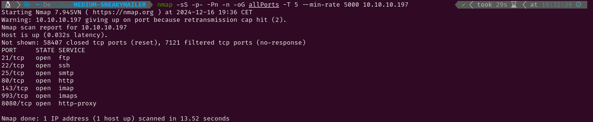
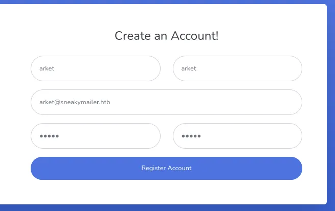
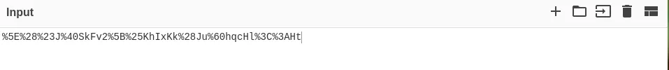
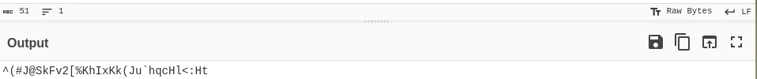
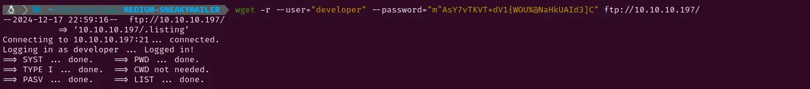

MEDIUM - SNEAKYMAILER
1. Recon
Nmap
nmap finds seven open ports: FTP (21), SSH (22), SMTP (25), HTTP (80 & 8080) and Imap (143 & 993).

The NSE (Nmap Scripting Engine) finds the following information:
- The box is using Debian
- The version of the vsftpd service is 3.0.3
- The version of the OpenSSH service is 7.9p1
- Both HTTP services use nginx 1.14.2

FTP - TCP 21
The FTP service does not allow anonymous login and does not seem to be vulnerable to anything else than Denial of Service attacks.

Website - TCP 80
Visiting http://10.10.10.197/ automatically redirects to http://sneakycorp.htb. I will add it to /etc/hosts and try finding subdomains. To achieve that I will try doing a DNS zone transfer with dig and bruteforce subdomains with wfuzz. The fuzzing application finds the subdomain dev. I will add it to /etc/hosts as well.


Having added the domain to /etc/hosts now visiting the website shows a employee dashboard. There is a message saying that emails should be checked as further instructions to register an account are given. The Team tab shows a list of users and their emails. These emails have a different domain so I will add it to /etc/hosts too.


I will try finding subdomains for sneakymailer.htb again the same way I did before with dig and wfuzz. No results were retrieved this time.


As nothing seems exploitable here I will try finding hidden directories and files with gobuster. However, no interesting results are found.

Inspecting the source code, I have found a comment which mentions the existence of /pypi/register.php. Visiting it a user creation form is shown. Filling it and trying to create an account doesn’t seem to work. As we read in the Dashboard tab, further instructions about this form were sent via email. Fuzzing the pypi directory with gobuster doesn’t find anything else than register.php.


Website - TCP 8080
Connecting to http://10.10.10.197:8080/ shows the default nginx site. Trying to bruteforce hidden directories with gobuster won’t retrieve anything else than the index.

2. Gaining Access
The hint about checking the emails and the lack of vulnerabilities in the web services leads me to think that I should try reading emails. Although I have no credentials yet, I have a list of emails. I will try throwing a phising campaign with swaks to see if I get back any kind of information. The first step is getting the list of emails with a quick python script that prints all the emails separated by commas.


Now I can use the output of this script to send an email to each one of them with swaks. I will put in the body of the message a link to a netcat listener I have started in my kali to get the response in case there is one. After a few moments a POST request is received. It contains some parameters, including an email (paulbyrd@sneakymailer.htb) and an encrypted password.


CyberChef can be used to decode the password using URL Decode and From Base64.


I will connect to the IMAP service (port 143) and use the credentials I have found to log in. No inbox but INBOX.Sent Items has any existing emails. Checking on those two emails I have found developer:m^AsY7vTKVT+dV1{WOU%@NaHkUAId3]C


After using those credentials to try logging into the target via SSH and failing, I have tried them on the FTP service and succeeded. A directory called dev with the content of the website can be found inside. I have downloaded and inspected it but it didn’t have any useful information.


After some time I have realised that I have permissions to upload files to the FTP so I have put a reverse shell into the dev directory and triggered it visiting http://dev.sneakycorp.htb/reverse.php. This has spawned a shell as www-data in my netcat listener and thus given me access to the target.


3. Privilege Escalation
Low
After a while looking for something vulnerable I have found the file .htpasswd which contains a hash. I will try to crack it with john using the wordlist rockyou.txt. A few moments later it gets the password soufianeelhaoui. This password doesn’t work to log in as low, vmail or root.


Looking the /etc/passwd I have found that pypi is a user of the system so I have looked for processes it may be running. One result is shown using ps aux | grep pypi and it is a pypi-server instance running in the port 5000.

I have noticed its location is /var/www/pypi.sneakycorp.htb/ so iḿ goin to check the available sites list to see how that subdomain is configured. It looks like any requests made to the http service running on port 8080 are being redirected to the localhost port 5000.

This means that connecting to http://pypi.sneakycorp.htb:8080/ should redirect me to the pypi server. Some instructions on how to install packages are shown. Clicking the link to the package index spawns a form which can be filled with pypi:soufianeelhaoui to get access, but it is empty.

Following this tutorial I have managed to create and install a pypi package which sends a reverse shell to my kali. The firs step is creating the files and directories where the package will be configured. It will look something like this:

Then the setup.py content has to be defined. This is where I have put the reverse shell for the server to execute it and send a shell to my kali. Once that is done, it is time to send the package to the pypi server. This can be done by editing the file ~/.pypirc to set up the host and the credentials.


After everything is configured, now I can execute the command to create and upload the package and the reverse shell will be sent to my netcat listener. NOTE: A reverse shell is sent first from the device where the command is executed (from my kali in this case) and after that is done, another reverse shell will be sent from the server where the package is being installed. This meanst that I have set up a netcat listener, then I have run setup.py, then I have set up another netcat listener and then I have killed the shell which had spawned in the first netcat listener. That way, the second listener will get the reverse shell sent by the target.


Root
Checking the sudo permissions for low I can see that I can use pip3 with sudo permissions. After checking in gtfobins how to use pip to escalate privileges, I have run the suggested commands and spawned a shell with root permissions. Now I can retrieve the flags and submit them.